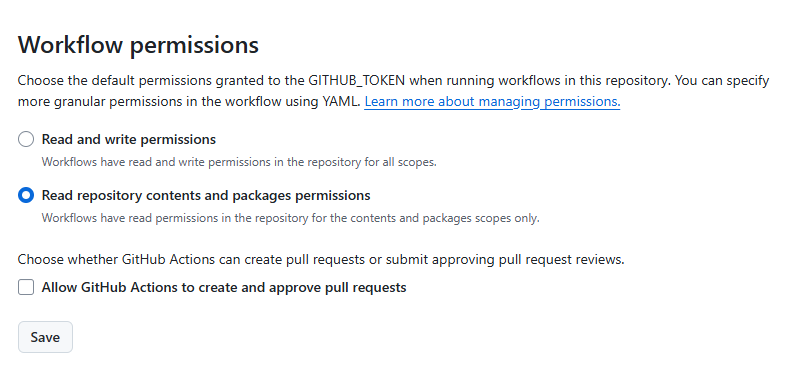
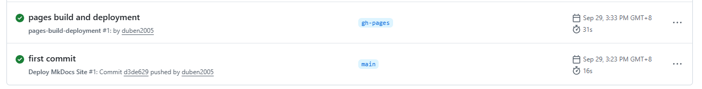
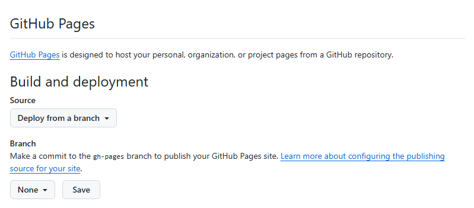
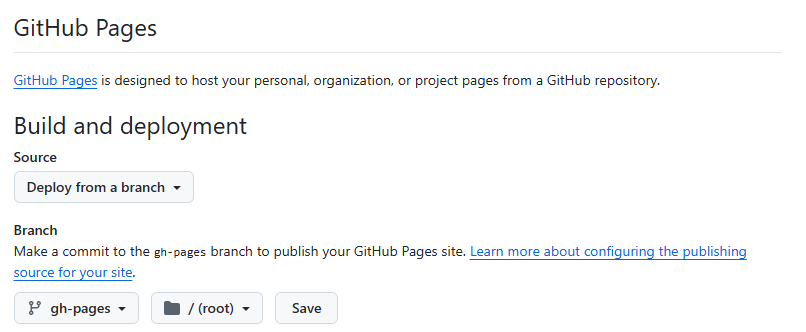

在Github Pages中使用Mkdocs（基础篇）
不在本地安装 mkdocs，而是把它放在 CI/CD 流程里（比如 GitHub Actions、Forgejo Actions、GitLab CI）。这样只要 git push，服务器就会自动拉取代码、执行 mkdocs build，并把生成的静态网站部署到目标位置（比如 GitHub Pages、服务器的 /var/www/html，或者一个专门的分支）。
使用 GitHub Actions 在云端自动构建和部署 MkDocs 网站。
这种方法的优势非常明显：
- 无需在本地安装 MkDocs、Python 或任何依赖。
- 自动化：每次
git push到main分支时，GitHub 会自动构建网站并部署。 - 环境一致：避免了“在我机器上能运行”的问题。
设置 GitHub Actions 自动化部署
假设项目名称为：techdocs。详细步骤如下：
一、本地设置
(一）仓库目录结构
techdocs/
├── mkdocs.yml # mkdocs 配置文件（必须）
├── docs/ # 文档目录，所有md文档都在这个目录及子目录下
│ ├── index.md # MkDocs 项目的首页文档，也是整个文档网站的入口页面
│ ├── techdocs/ # 子目录按需创建
│ │ └── python-basics.md # md文档，将转化为网页显示
│ ├── life/
│ │ └── travel-japan.md
│ └── ...
└── .github/ # GitHub Actions 工作流的目录
└── workflows/
└── deploy.yml # GitHub Actions 工作流（需要创建）
关键：确保 mkdocs.yml 文件在仓库的根目录。
（二）创建 mkdocs.yml 配置文件
在 MkDocs 中，mkdocs.yml 是项目的核心配置文件，用于定义网站的结构、主题、插件等所有设置。以下是一个简单的配置，不使用第三方主题：
site_name: 我的笔记 # 项目名称
docs_dir: docs # 指定文档目录，缺省是docs
plugins: # 使用的插件
- search # search插件是内置且默认启用的
（三）编写markdown文档
首先，编写index.md，例如：
# 欢迎来到我的学习笔记
这里是我的学习笔记，使用 Markdown 编写。
根据需要，在docs目录下建立子目录，例如：tech、life等。
（四）创建 GitHub Actions 工作流文件
在仓库中创建一个特殊的文件来定义自动化流程。
在你的仓库根目录创建文件夹 .github/workflows/。
在该文件夹中创建一个 YAML 文件，例如 deploy.yml。
文件内容 deploy.yml：
# .github/workflows/deploy.yml
name: Deploy MkDocs Site
# 触发条件：当推送到 main 分支时
on:
push:
branches:
- main
jobs:
deploy:
# 运行在 GitHub 提供的虚拟机上
runs-on: ubuntu-latest # Github远程ubuntu虚拟机，占用的是Github的资源
steps:
# 1. 检出仓库代码
- name: Checkout code
uses: actions/checkout@v4
# 2. 设置 Python 环境
- name: Set up Python
uses: actions/setup-python@v5
with:
python-version: 3.x
# 3. 安装 MkDocs 和主题
- name: Install dependencies
run: |
pip install mkdocs # 这里只使用mkdocs，不使用第三方主题和插件
# pip install mkdocs-material # 如果在 mkdocs.yml 中使用 material 主题
# 如果需要其他插件，也在这里安装，例如：
# pip install mkdocs-awesome-pages-plugin
# pip install mkdocs-minify-plugin
# 4. 构建网站（生成 site/ 目录）
- name: Build site
run: mkdocs build
# 5. 部署到 GitHub Pages
- name: Deploy to GitHub Pages
uses: peaceiris/actions-gh-pages@v3
with:
github_token: ${{ secrets.GITHUB_TOKEN }}
publish_dir: ./site
二、在Github上设置
（一）设置 GitHub 使用 SSH 连接
略
（二）创建仓库
在 Github 上创建一个仓库 techdocs。
（三）修改仓库Action权限（重要）
-
进入你的 GitHub 仓库 ->
Settings。 -
在左侧菜单中找到
Actions->General。 -
向下滚动到 "Workflow permissions"。缺省的是这样的：

-
确保选择了
Read and write permissions。- ❌ 不要选
Read repository contents permission。 - ✅ 必须选
Read and write permissions，因为部署需要写入gh-pages分支。
- ❌ 不要选
-
点击
Save。
（四）推送代码并触发构建
git init
git add .
git commit -m "first commit"
git branch -M main
git remote add origin git@github.com:<username>/techdocs.git
git push -u origin main
（五）查看构建状态
-
进入你的 GitHub 仓库。
-
点击
Actions标签页。 -
你会看到一个名为 "Deploy MkDocs Site" 的工作流正在运行。
-
等待它完成（通常需要 1-2 分钟）。
如果一切顺利，你会看到绿色的勾号。

（六）启用 GitHub Pages
1. 进入 techdocs GitHub 仓库 -> Settings -> Pages。

2. 在 Build and deployment 部分：
- Branch: 选择 gh-pages
- /root: 选择根目录

3. 点击 Save。
注意：actions-gh-pages Action 会自动创建 gh-pages 分支并推送构建后的文件。
（七）访问你的网站
构建成功后，网站就可以通过以下地址访问了：
https://<你的用户名>.github.io/<仓库名>/
例如：https://mudxkx.github.io/techdocs/

下一篇，我们将使用mkdocs的第三方主题